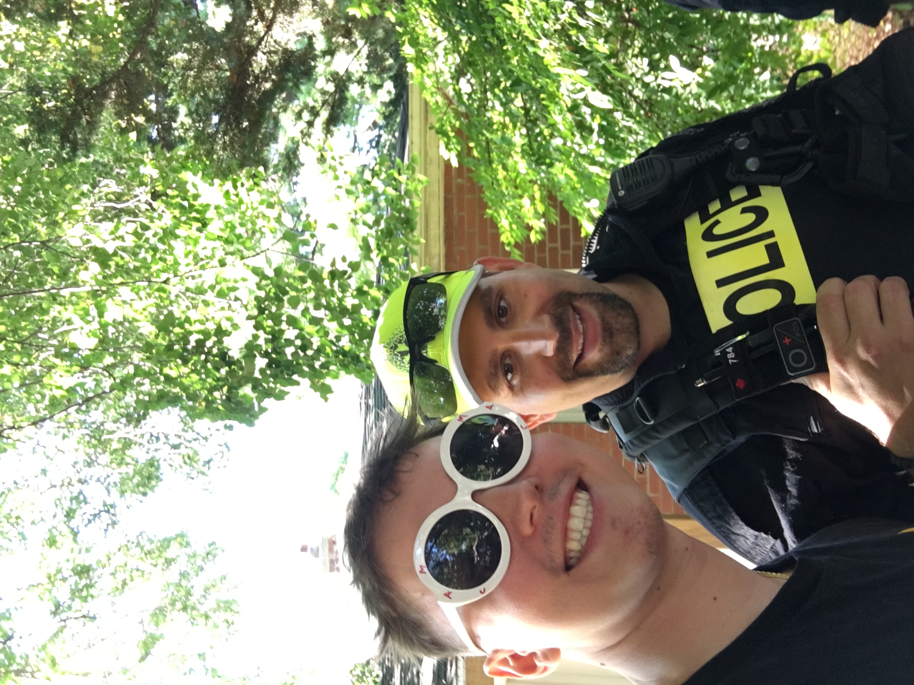

About Me
My name is Andreas Evans-Adamecz, and I'm from Pickering, Ontario.
I'm a passionate and detail-oriented computer science student with experience in software development, database management, and full-stack web applications. My focus is on building efficient, accessible, and user-friendly solutions. With a strong foundation in object-oriented programming and web technologies, I am eager to apply my skills in a professional setting.
Upon graduation, I aspire to work as a software developer, specializing in full-stack development, database architecture, or artificial intelligence. I am always looking for opportunities to expand my knowledge and contribute to innovative projects.